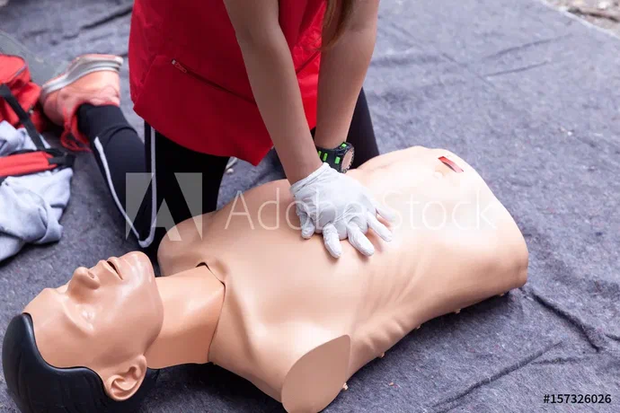
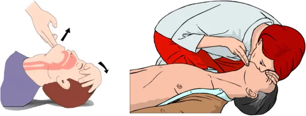
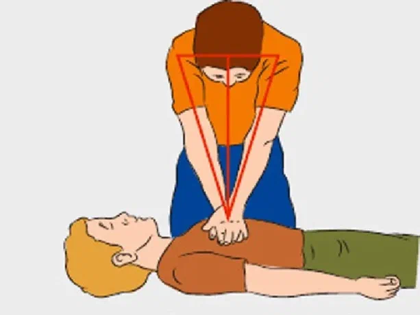
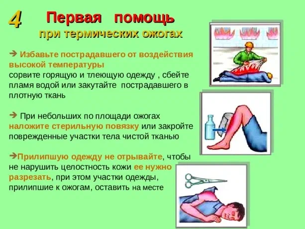

Применяется при отсутствии пульса и дыхания.

Наиболее эффективный при оказании первой помощи неспециалистом метод — искусственное дыхание «рот в рот» и «рот в нос».
Обеспечьте проходимость верхних дыхательных путей. Поверните голову пострадавшего набок и пальцем удалите из полости рта слизь, кровь, инородные предметы. Проверьте носовые ходы пострадавшего, при необходимости очистите их. Запрокиньте голову пострадавшего, удерживая шею одной рукой. Не меняйте положение головы пострадавшего при травме позвоночника! Положите на рот пострадавшего салфетку, платок, кусок ткани или марли, чтобы защитить себя от инфекций. Зажмите нос пострадавшего большим и указательным пальцем. Глубоко вдохните, плотно прижмитесь губами ко рту пострадавшего. Сделайте выдох в лёгкие пострадавшего. Первые 5–10 выдохов должны быть быстрыми (за 20–30 секунд), затем — 12–15 выдохов в минуту. Следите за движением грудной клетки пострадавшего. Если грудь при вдохе воздуха поднимается, значит, вы всё делаете правильно.

Уложите пострадавшего на плоскую твёрдую поверхность. На кровати и других мягких поверхностях проводить компрессию грудной клетки нельзя. Определите расположение у пострадавшего мечевидного отростка. Мечевидный отросток — это самая короткая и узкая часть грудины, её окончание. Отмерьте 2–4 см вверх от мечевидного отростка — это точка компрессии. Положите основание ладони на точку компрессии. Вторую руку поместите поверх первой, кисти рук держите в замке. Выпрямите руки в локтевых суставах, плечи расположите над пострадавшим так, чтобы давить перпендикулярно плоскости грудины. Сжимайте мышцы сердца между грудиной и позвоночником в целях поддержания кровообращения человека при остановке сердца.

Устраните источник травмы.
Остановите действие повреждающего фактора: погасите пламя, уберите горячий предмет, смойте химическое вещество.
Остудите место ожога.
Держите травмированный участок тела под прохладной проточной водой не меньше 10 минут или сделайте холодный компресс. Это поможет снизить боль и отёк, предотвратит распространение ожога вглубь тканей.
Снимите украшения и тесную одежду рядом с поражённым участком тела. Из-за нарастания отёка аксессуары и ткани могут сдавливать кожу. Если одежда прилипла, не пытайтесь оторвать её, просто аккуратно обрежьте вокруг травмы.
Наложите стерильную сухую повязку. Используйте чистую марлю или бинт. Это защитит от возможных инфекций и повреждений. Повязка не должна быть тугой (сдавливающей).
Снизьте болевые ощущения.
При сильной боли можно принять обезболивающее средство (анальгин, парацетамол, ибупрофен), но важно учитывать возможные противопоказания.
Посетите травмпункт. Обязательно обратитесь за профессиональной помощью, если ожог глубокий и занимает площадь больше ладони пострадавшего.
